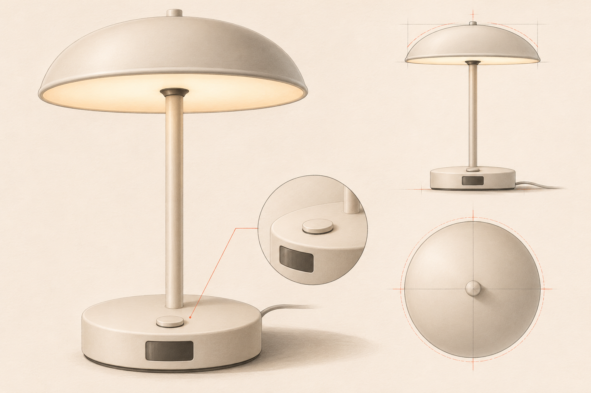

The v/h lamp / In development
Just a
better lamp.
A familiar switch.
A lamp designed to learn your evenings.
We're developing a table lamp that learns when its light is useful from the way you already use it.

Warm, diffused light.
One physical on/off button.
Learning inside the lamp.
From the first evening
Put it down.
Plug it in.
Switch it on.
The starting point is an ordinary lamp. Press for light, press again to switch off.
Learning should happen through use, with no schedule to program or setup to complete. The aim is fewer trips to the switch as the lamp gets to know your routine.
Core design requirements: no app, account, internet connection or subscription.
An example of the intended behavior
Your evening.
At your pace.
Suppose you usually switch on between 5 and 6 pm, then off between 9 and 10. The lamp should learn the pattern while leaving room for tonight to be different.
At the beginning
You use the switch.
Repeated on/off choices give the lamp examples of when you want light. It should work normally while it learns, and wait for a consistent pattern before offering assistance.
Your usual evening
The room counts too.
During a learned switch-on window, nearby presence and low light could bring the lamp on. An empty or already bright area should not trigger it just because the usual time has arrived.
A later chapter
You're still reading.
The design should keep the light on while you're using the area, even past your usual bedtime. Uncertain presence should prevent an automatic switch-off.
When you've left
The light can follow.
A learned switch-off window and sustained absence could allow a gradual fade to off. A darker room alone should never be enough.
Your switch comes first.
A manual change should act immediately. Pressing during an automatic fade should restore the light, and repeated corrections should make the assistance back off.
Illustrative routine, not a demonstration or a fixed schedule. Learning time and behavior still need to be tested in homes.
How it would know
Useful clues.
Close to home.
A small computer in the base would combine your choices with what's happening nearby, then check that the light responded.
The learning and light control are designed to stay in the lamp, without a camera, microphone or another connected device.
Our philosophy- Your choices
- Manual switch use provides the examples. The lamp's automatic actions should not become evidence that you wanted them.
- The light nearby
- Local light levels help judge whether more light would be useful. One lamp cannot tell whether every light in the house is off.
- Someone staying
- Presence sensing is intended to notice people using the area, including someone sitting still. That reliability still has to be established in different rooms.
Living with it
The everyday
questions.
The useful part is what the lamp takes care of, and how easily you can keep control.
How quickly would it learn?
We haven't established a reliable number of days. The design needs repeated, consistent manual choices and useful observations of light and presence. An irregular routine should mean less automatic assistance, with normal on/off use available from the start.
What if tonight is different?
Use the switch as usual. A manual change should take priority, without the lamp promptly reversing it. Repeated corrections should reduce automatic assistance, and later use should teach changes in routine.
What happens after unplugging it?
The design retains learned patterns during normal unplugging. After power returns, the light is intended to stay off until you press the button. If timing information is lost, timed assistance should pause until relearned.
Could it tell me about the air, too?
An idea we're exploring, outside the current design
A separate, simple indicator could offer a useful cue about the room while keeping the main light comfortable for reading. For example, a clearly labelled cue for rising carbon dioxide could prompt someone to check ventilation.
Air feedback would need additional sensors and testing. Any cue should explain a specific measured condition, with more than color alone to convey its meaning. We would not use a green light to claim that the room's air is safe or clean.
Background: EPA guidance on indoor air monitors
A short concept film
An evening,
with less to do.
An illustration of the experience we're working toward.
Concept animation, not product footage. Silent film with written descriptions. The form and behavior are illustrative.
Read the film
A person comes to a chair beside a lamp and sits down with a book. The light comes on. Later, they leave and the light fades. The film presents the goal of a lamp that fits an everyday routine while keeping a familiar switch. It does not show a working prototype.
Where we are
A design.
A clear next step.
The lamp is still a design. We have not built or tested a physical prototype.
The next step is to build it and find out whether the assistance helps in ordinary rooms. That includes still reading, changing daylight, manual corrections, light quality and dependable everyday operation.
The learning has to earn its place through a better experience.
Occasional development updates. No payment or reservation. Price, final specifications and availability are not set.